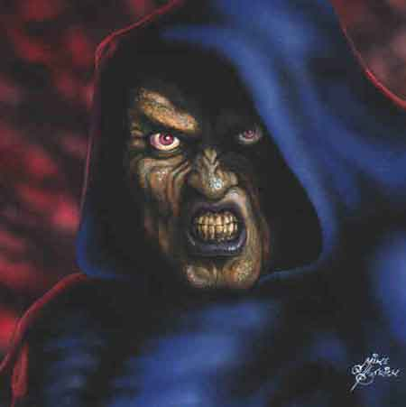

Il Cumulo dei Punti Negativi
Ogni
volta che una creatura utilizza incantesimi o poteri magici della scuola Necromancy costei cumula punti
negativi in quanto, come stabilisce
la Teoria delle aberrazioni provocate dall’energia
negativa
Per questo motivo punti negativi possono essere accumulati in una diversità di modi. Il modo principale riguarda la conoscenza delle magie della scuola necromancy. Si badi che questo sistema di calcolo dei punti negativi fa riferimento esclusivamente alle magie che il personaggio conosce indipendentemente dal loro effettivo uso in corso di gioco. La possibilità di accumulare un punto negativa si basa sul livello di potere della magia e sulla circostanza se la stessa appartiene alla negromanzia bianca, grigia o nera come indicato nella seguente tabella:
| Livello di potere | Necromancy Bianca | Necromancy Grigia | Necromancy Nera |
| 1° livello | 3 / 2 | 6 / 4 | 10 / 7 |
| 2° livello | 6 / 4 | 12 / 8 | 20 / 14 |
| 3° livello | 9 / 6 | 18 / 12 | 30 / 21 |
| 4° livello | 12 / 8 | 24 / 16 | 40 / 28 |
| 5° livello | 15 / 10 | 30 / 20 | 50 / 35 |
| 6° livello | 18 / 12 | 36 / 24 | 60 / 42 |
| 7° livello | 21 / 14 | 42 / 28 | 70 / 49 |
| 8° livello | 24 / 14 | 48 / 28 | 80 / 56 |
| 9° livello | 27 / 18 | 54 / 36 | 90 / 63 |
I numeri esposti nella tabella indicano la percentuale che il personaggio ottiene rispettivamente all'atto di imparare un nuovo incantesimo (primo numero scritto in viola) e al momento della seconda od ogni successiva prova di verifica sul medesimo incantesimo (secondo numero scritto in arancione). La prima verifica avverrà quindi al momento in cui il personaggio impara l'incantesimo le successive verifiche saranno effettuate al trascorrere di ogni anno di gioco del personaggio.
Per i
personaggi creati ad un livello superiore al primo si tiri una volta la
percentuale piena (viola)
per le magie di ogni livello di potere al quale si ha accesso e si tiri la
percentuale ridotta (arancione)
per tutte le magie dei vari livelli di potere una volta per ogni livello di
esperienza al quale è possibile utilizzare quelle magie ulteriore a quello che
permette di avere accesso a quello specifico livello di potere.
Per fare un esempio si consideri un negromante di 4° livello di esperienza.
Costui dovrà tirare la percentuale piena una sola volta per le magie di 2°
livello di potere (ossia per il 3° livello di esperienza) e di 1° livello di
potere (ossia per il 1° livello di esperienza), nonché la percentuale ridotta
una volta per le magie del 2° livello di potere (ossia per il 4° livello di
esperienza), e tre volte per le magie di 1° livello di potere (ossia per il 2°,
3° e 4° livello di esperienza).
La seconda modalità di acquisizione di punti negativi dipende dal possesso di oggetti magici, si noti che, anche in questo caso non conta l'utilizzo pratico ma il possesso e la vicinanza dell'oggetto. Per simulare questo accumulo di punti negativi si consideri che un personaggio dovrà effettuare i tiri previsti in base alla potenza dell'incantamento negromantico al momento di stabile impossessamento dell'oggetto nonché al trascorrere di ogni anno di gioco del personaggio.
| Potenza dell'Incantamento della Scuola Necromancy | Percentuale di accumulo di punti negativi |
| Minor Enchantment | 50 |
| Lesser Enchantment | 60 / 45 |
| Superior Enchantment | 75 / 50 / 35 |
| Greater Enchantment | 80 / 65 / 50 / 35 |
Per i personaggi creati ad un livello superiore al primo si tiri per ogni oggetto posseduto una volta più una volta supplementare per ogni numero di anni che l'oggetto si considera posseduto secondo una tabella dipendente dal livello di esperienza del personaggio.
| Livello di esperienza | Numero di anni | Livello di esperienza | Numero di anni |
| 1° livello | nessuno | 7° livello | +1d4 anni |
| 2° livello | +1 anno | 8° livello | +1d6 anni |
| 3° livello | +1d2 anni | 9° livello | +1d6 anni |
| 4° livello | +1d2 anni | 10° livello | +1d8 anni |
| 5° livello | +1d3 anni | 11° livello | +1d8 anni |
| 6° livello | +1d3 anni | 12+° livello | +1d10 anni |
Per fare un esempio si consideri un personaggio di 5° livello di esperienza che possiede un Lesser Enchantment della scuola Necromancy. Costui dovrà tirare le due percentuali previste una volta per il primo impossessamento nonché ulteriori 1d3 volte per o pregressi anni di possesso simulati.
Ogni
volta che un qualsiasi tiro percentuale è pari o minore alla percentuale
indicata il personaggio accumula un punto negativo.
A furia di cumulare i punti negativi il corpo della creatura può subire mutazioni negative. I negromanti hanno però scoperto una pozione di base erboristica che, basandosi su energia positiva, quando è ingerita provoca la dispersione parziale delle energie negative accumulate.
Mutazioni Negative
Quando la creatura raggiunge un ammontare di punti negativi pari a 10 +/- il modificatore ottenuto ai punti ferita per il punteggio di costituzione posseduto (si consideri unicamente il punteggio naturale dell'abilità anche se modificato in qualsiasi modo dalla magia) avrà accumulato abbastanza punti negativi da ottenere un punto mutazione.
Appena tale punto viene cumulato il mago tira un dado percentuale per verificare se ha subito una mutazione. Se non subisce conserverà il punto mutazione e lo cumulerà con i successivi al fine di determinare la % del verificarsi di una mutazione. Se la mutazione, invece, ha luogo il mago si libererà di tutti i punti mutazione fino ad allora cumulati e ricomincerà a cumularsi da zero.
Per ogni punto mutazione accumulato il mago ha una possibilità pari al 25% di subire una mutazione dovuta all'energia negativa.
Quando si
verifica una mutazione negativa dovrà verificarsi tirando 1d20 se la creatura ha
ottenuto:
[1-10]
Maledizione Oscura
[11-20]
Potere Oscuro
MALEDIZIONE OSCURA
Aura Innaturale : La creatura irradia costantemente un'innaturale aura negativa. Solo gli animali, sia selvatici che domestici, possono percepirla. Per tale motivo non si avvicineranno di loro volontà a più di nove metri di distanza dalla creatura e cercheranno di mantenere questa distanza mostrando segni di inquietudine nei confronti della stessa. Se obbligati ad avvicinarsi resteranno immobilizzati in stato di terrore fino a che resteranno all'interno del suddetto raggio. Tale aura rende di fatto impossibile per la creatura utilizzare compagni o cavalcature animali. Animali mossi da forte volontà (come può essere ad esempio quella di un predatore affamato) o sotto controllo di altre creature (si pensi ad un cane da guerra addestrato) possono superare un tiro salvezza su coraggio all'inizio di ogni round di combattimento (prima delle intenzioni) per vincere la paura e avvicinarsi alla creatura al fine di attaccarla. Se il tiro salvezza fallisce costoro resteranno per il round in corso sulla difensiva e, se conveniente, cercheranno di allontanarsi a nove metri dalla creatura. Deve osservarsi, infine, che qualora gli animali non abbiano materialmente modo di allontanarsi dalla creatura e siano minacciati nella loro incolumità si considereranno, in ogni caso, superare automaticamente il suddetto tiro salvezza.
Vista
Oscura : Le pupille della
creatura diventano sottili ed allungate ed i suoi occhi
acquistano l'oscurovisione
divenendo in grado di
percepire anche la più piccola fonte luminosa. La creatura potrà vedere con
ridotte penalità a tutti i livelli di illuminazione ad eccezione del buio
assoluto.
Scarsa Luminosità: Nessuna penalità
Penombra: Nessuna penalità
Minima Luminosità: -1 al tiro per colpire e 10% di penalità al lancio degli
incantesimi
Oscurità: -2 al tiro per colpire e 20% di penalità al lancio degli incantesimi
Buio Assoluto: Nessuna visibilità, la creatura si considera cieca a tutti gli
effetti.
Allo stesso tempo, però,
la vista della creatura diviene molto sensibile e facilmente disturbata da luci
intense. Quando la
creatura guarda qualcosa che si trova in una zona illuminata da una luce in
grado di illuminare ad almeno 12 metri di raggio (come un Continual Light) o
dalla luce solare del giorno pieno costui riceve una penalità di -1 ai tiri per
colpire ed il 10% di fallire nel lancio degli incantesimi. Tale penalità non si
applica nella penombra o all'alba ed al tramonto o nelle giornate intensamente
nuvolose. Inoltre, se è lo stessa creatura a trovarsi illuminata da una luce di
simile intensità costui riceverà anche una penalità di -1 a tutte le prove di
destrezza e di -5% ai tiri salvezza su riflessi.
Le creature già dotate di
infravisione o di oscurovisione non possono ottenere questa mutazione negativa.
Puzzo di Morte : Il corpo della creatura emana un moderato ma costante puzzo di cadavere come quello che si avverte nelle zone cimiteriali che si espande fino a 30 metri di distanza. Quest'odore non può essere coperto anche dai più potenti profumi. La creatura riceve costantemente una penalità di - 1 a tutte le prove di carisma, di - 1 alle prove nella competenza Ambush, e di - 5% a tutte le prove di hide in shadow. Inoltre la creatura darà un bonus di +1 alle prove nella sorpresa effettuate dai propri avversari.
Artigli : Le mani della creatura mutano divenendo artigli affilati che la creatura può utilizzare in combattimento. In particolare, la creatura potrà effettuare attacchi fisici in corpo a corpo con tali artigli (si considerino due attacchi fisici simultanei) provocando 1d4 danni da lacerazione. Uno di tali attacchi può anche essere effettuato contestualmente ad un attacco in corpo a corpo effettuato con un'arma ad una mano. Questi artigli non impediscono in alcun modo la manipolazione di oggetti da parte della creatura né incidono sul lancio degli incantesimi.
Sensibilità al Sacro : La creatura diviene sensibile agli oggetti sacri e ai riti delle divinità della Fratellanza della Luce che utilizzano potere infuso di energia positiva. Per questo motivo, costei sarà estremamente infastidita dal contatto con tali oggetti e, seppure potenzialmente in grado di toccarli, farà in modo di non trasportarli e di tenerli a distanza. Inoltre, la creatura potrà essere oggetto di una prova di scacciare i non morti comportandosi a tal fine come un non morto di dadi vita pari al suo livello di esperienza (eventuali dadi vita razziali saranno considerati solo se superiori al livello di esperienza raggiunto). Infine, il contatto con il contenuto di una boccetta di acqua santa della Fratellanza della Luce provoca alla creatura 2d4 danni da ustione sacra.
Refrattarietà all'Energia Positiva : Il corpo della creatura diviene parzialmente refrattario all'energia positiva. Per tale motivo costei riceverà solo la metà (per difetto) degli effetti curativi prodotti da poteri e magie basati sull'energia positiva. Rigenerazioni e forme diverse di cura non saranno modificate da questa mutazione negativa. Infine le cure basate sull'energia positiva, nonostante abbiano effetto ridotto sul corpo della creatura, saranno ugualmente in grado di rimuovere effetti dei colpi critici considerandosi a tal fine il potenziale della loro cura non modificato dalla mutazione negativa.
Fragilità Corporea : Il corpo della creatura diviene fragile ed emaciato. Per tale motivo, ogni volta che la creatura subisce un qualsiasi tipo di colpo capace di produrre danni fisici (taglio, botta o punta) costei riceverà un punto di danno addizionale.
Aspetto Cadaverico : Il corpo della creatura acquista un aspetto cadaverico. La creatura mostrerà, in particolare, perdita a chiazze della capigliatura e della peluria, marciume della cavità orale, fiato nauseante, occhiaie innaturalmente profonde, caduta parziale delle unghie, colorito anemico con comparsa di chiazze dal colore giallognolo. La creatura dimezzerà il proprio punteggio di appearance (arrotondandolo per eccesso), riceverà costantemente una penalità di -2 a tutte le prove di carisma ed il 10% di possibilità che al momento dell'utilizzo di un punto divino lo stesso sia speso senza l'ottenimento di alcun effetto.
Corpo Deforme : Il corpo della creatura mostra alcune serie deformità come una gobba pronunciata, le gambe storte o le braccia rattrappite. Di conseguenza i suoi movimenti risultano in alcune occasione più goffi ed impacciati. Per tale motivo la creatura riceve una penalità di -2 a tutte le prove di destrezza, di -5% a tutti i tiri salvezza su riflessi e di -5% alla prova nell'arte della schivata eventualmente posseduta.
POTERE OSCURO
Tocco
della Non Vita
[5 punti negativi]
Attraverso
questo potere la creatura può provare ad animare il cadavere di un umano, semi-umano
od umanoide di
dimensioni medium semplicemente toccandolo con la propria mano ed
infondendo in esso energia negativa. Si tratta di un'azione complessa
assimilabile al lancio di un incantesimo avente casting time 1 round che
richiede componenti somatici ed il mantenimento della concentrazione. La
creatura ha una possibilità pari al 35% + 5% per
livello di esperienza di riuscire nell’intento (con una possibilità massima del 95%), qualora sbagli il cadavere si
scioglierà distruggendosi ed il potere non avrà avuto effetto. Lo zombie animato sarà
un comune zombie base (non potendo essere animate con questo potere
creature scheletriche) agli ordini della creatura e conterà nel numero massimo di
non-morti che costei può tenere sotto controllo contemporaneamente con
incantesimi di animazione come specificato nella magia
Animate Dead (link). Questo
potere non potrà essere
utilizzato, infatti, qualora la creatura non disponga di un ammontare di dadi
vita liberi sufficienti a controllare la creatura che intende animare. Una volta
utilizzato questo potere lo stesso non potrà essere utilizzato nuovamente prima
che siano passate 24 ore.
Tocco
Vampirico
[3 punti negativi]
Attraverso
questo potere la creatura può provare a risucchiare l'energia vitale di una
creatura. Questo potere può essere utilizzato solo su creature viventi dotate di
corpo organico di natura animale. Si consideri l'utilizzo di questo potere alla
stregua del lancio di un incantesimo a tocco avente
casting
time
pari a +6 che richiede
componenti
somatici ed il mantenimento della concentrazione. Se la creatura colpisce il
proprio bersaglio con un regolare tiro per colpire la stessa subirà 1d6+2 danni
da energia negativa e la creatura si curerà della metà (per difetto) dei danni
effettivamente causati alla vittima. Questo potere a tocco può essere utilizzato
attraverso magie quali
Spectral
Hand
o similari. Una volta utilizzato questo potere lo stesso non potrà essere
utilizzato nuovamente prima che siano passate 24 ore (l'interruzione della
concentrazione, abortire l'azione o mancare il bersaglio saranno considerati
comunque come utilizzo del potere).
Amplificazione dell'Energia Negativa
[2 punti negativi]
(solo per utenti di magia)
La creatura
può utilizzare questo potere per infondere nei propri incantesimi maggiore
energia negativa aumentando, in tal modo, il danno provocato dagli stessi.
Quando la creatura utilizza questo potere il
casting time
della magia aumenterà di 1 punto. Non possono essere potenziati con questo
potere incantesimi con casting time pari o
superiore ad 1 round. Inoltre, la creatura potrà potenziare solo gli incantesimi
capaci di produrre danno diretto da energia negativa. La creatura, inoltre, non
potrà potenziare incantesimi già potenziati in altro modo, ad esempio attraverso
l'uso della magia
Augmentation I
(scuola
Alteration,
terzo livello di potere) od attraverso l'uso di oggetti
magici. L'incantesimo potenziato con tale
potere produrrà il 25% dei danni totali in più (risultato arrotondando per
eccesso).
Una volta
utilizzato questo potere lo stesso non potrà essere utilizzato nuovamente prima
che siano passate 24 ore.
Incremento Negativo [2 punti negativi]
(solo per utenti di magia o
sacerdoti)
La creatura
può utilizzare questo potere per lanciare un qualsiasi incantesimo della scuola
primaria Necromancy ad un livello di lancio superiore. Gli utenti di magia
possono cumulare questo potere con altri metodi di incremento del livello di
lancio, in nessun caso, però, potrà essere superato il limite massimo di quattro
livelli di lancio. I sacerdoti, invece, non possono cumulare questo beneficio
con quello previsto da altri poteri o competenze.
Una volta
utilizzato questo potere lo stesso non potrà essere utilizzato nuovamente prima
che siano passate 24 ore.
Filtro di Purificazione
Quando il mago ingerisce una fiala di questo filtro il suo corpo si libera, dopo 1 turno nel quale il mago suderà freddo ed avrà un grasso mal di testa (si considera come in situazione di collasso), di tutti i punti negativi accumulati. Il mago però deve effettuare un tiro salvezza contro raggio della morte modificato dal modificatore che varia a seconda dello stadio di affaticamento in cui si trovava al momento in cui ha ingerito al pozione. Se il tiro ha successo non succede nulla. Se il tiro fallisce parte dell'energia si insinuerà definitivamente nel proprio corpo rendendo possibile una mutazione.
Il filtro può essere prodotto da un erborista che abbia almeno il terzo grado di conoscenza nella necromanzia di primo livello di potere. La ricetta (per produrre 1 sola dose) richiede l'utilizzo di due diverse erbe di pianura ossia la Mimosa Solare e la Lavanda della Purezza. La preparazione richiede 5 giorni la modifica alla prova è di -3 e il preparato deve conservarsi in una fiala. Una fiala di questo filtro ha un valore pari a 30 g.p..
Quando il tiro salvezza fallisce si cumula un punto mutazione. Appena tale punto viene cumulato il mago tira un dado percentuale per verificare se ha subito una mutazione. Se non subisce conserverà il punto mutazione e lo cumulerà con i successivi al fine di determinare la % del verificarsi di una mutazione. Se la mutazione, invece, ha luogo il mago si libererà di tutti i punti mutazione fino ad allora cumulati e ricomincerà a cumularsi da zero.
Per ogni punto mutazione cumulato il mago ha una possibilità pari al 10% cumulabile di subire una mutazione dovuta all'energia negativa.